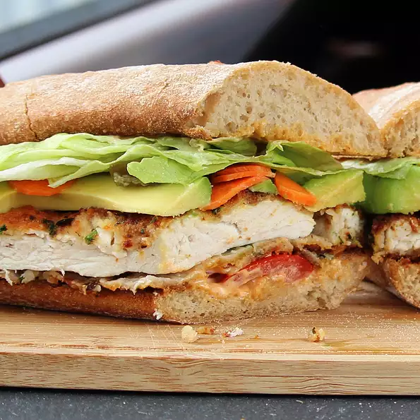

Torta de Milanesa de Pollo

Spicy breaded chicken breast gets sandwiched between a toasted Mexican bun then topped with spicy spread, avocado, lettuce, tomato, and pickled vegetables.
- ½ pound skinless, boneless chicken breast
- 1½ tablespoons cornstarch
- 1 egg
- ⅓ cup bread crumbs
- 2 tablespoons chopped fresh cilantro
- 1 teaspoon ground chipotle pepper
- 1 teaspoon dried Mexican oregano
- 1 teaspoon ground cumin
- ¼ teaspoon coarsely ground black pepper
- 2 bolillo rolls, sliced in half lengthwise
- 3 tablespoons mayonnaise
- 1 tablespoon hot sauce (such as Valentina®)
- 2 tablespoons sunflower seed oil
- ½ avocado, sliced
- 3 slices tomato
- 2 lettuce leaves
- 1 tablespoon pickled carrots
- 1 tablespoon pickled jalapeno peppers
- Preheat the oven to 250 degrees F (120 degrees C).